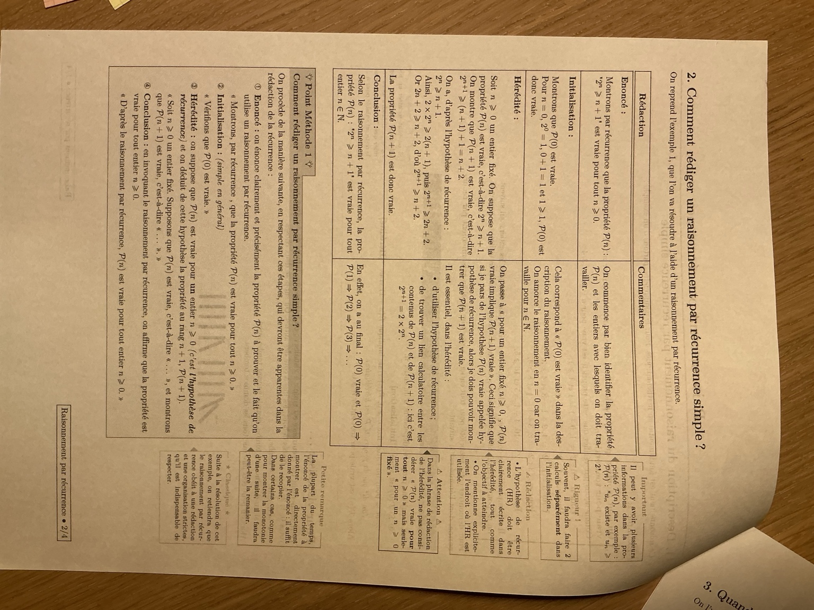
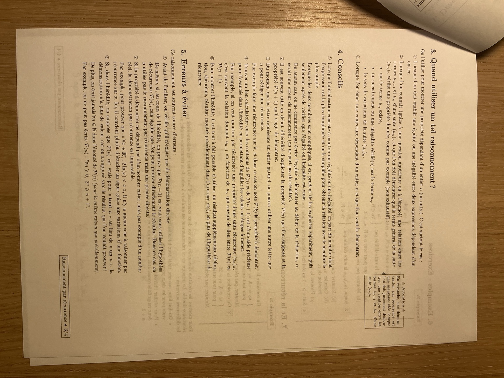
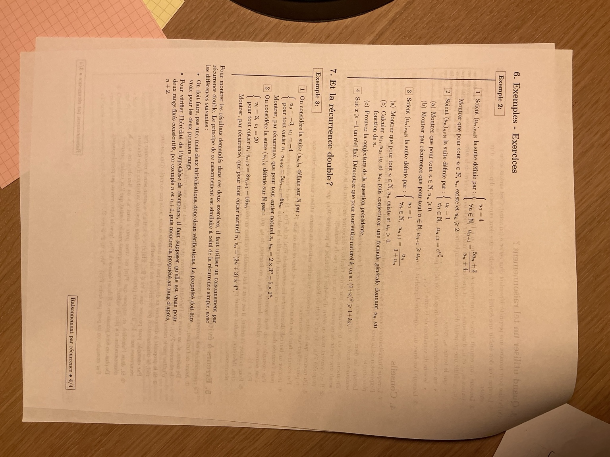
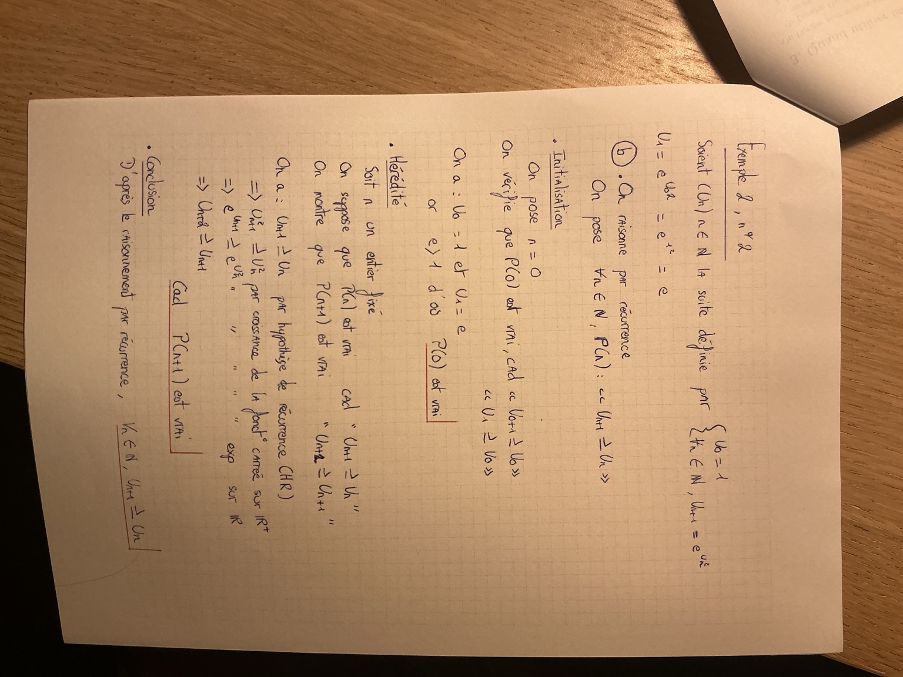

Raisonnement par récurrence.
Passer d’un rang au suivant, rédiger chaque étape et savoir quand utiliser deux rangs. Le cours de classe est repris dans son ordre, avec tous les exercices corrigés sans calculatrice.
1. Description du raisonnement par récurrence simple
On veut montrer que la propriété \(P(n)\) : « \(2^n\ge n+1\) » est vraie pour tout entier naturel \(n\).
| Rang \(n\) | \(2^n\) | \(n+1\) | Vérification |
|---|---|---|---|
| 0 | 1 | 1 | \(1\ge1\) |
| 1 | 2 | 2 | \(2\ge2\) |
| 2 | 4 | 3 | \(4\ge3\) |
| 3 | 8 | 4 | \(8\ge4\) |
| 4 | 16 | 5 | \(16\ge5\) |
Ces vérifications ne prouvent la propriété qu’aux cinq rangs testés. Il reste une infinité de rangs : on ne peut pas tous les vérifier un par un.
Soit \(P(n)\) une propriété dépendant d’un entier naturel \(n\). Si :
- \(P(0)\) est vraie : c’est l’initialisation ;
- pour un entier \(n\ge0\) quelconque fixé, supposer \(P(n)\) vraie permet de démontrer \(P(n+1)\) : c’est l’hérédité ;
alors \(P(n)\) est vraie pour tout entier \(n\ge0\).
Imagine une infinité de dominos numérotés \(0,1,2,3,\ldots\). Le domino 0 tombe ; chaque domino qui tombe entraîne le suivant. Les deux conditions réunies permettent de conclure qu’ils tombent tous. Le premier domino correspond à l’initialisation ; la transmission au suivant correspond à l’hérédité.
Si la propriété débute au rang \(n_0\), on initialise en \(n_0\), puis on prouve la transmission pour un entier quelconque \(n\ge n_0\). On conclut seulement pour les rangs \(n\ge n_0\).
2. Comment rédiger une récurrence simple ?
- Énoncé. Identifier la propriété et les rangs concernés : « Pour \(n\ge n_0\), notons \(P(n)\) la propriété “…” ; montrons-la par récurrence. »
- Initialisation. Vérifier \(P(n_0)\) par un calcul. Si l’on démontre une égalité, calculer séparément les deux membres.
- Hérédité. « Soit \(n\ge n_0\) un entier fixé. Supposons \(P(n)\) vraie, c’est-à-dire “…”. Montrons \(P(n+1)\), c’est-à-dire “…”. » Faire le calcul en indiquant où l’hypothèse est utilisée.
- Conclusion. « D’après le principe de récurrence, \(P(n)\) est vraie pour tout entier \(n\ge n_0\). » Redonner ensuite le résultat en toutes lettres ou en formule.
Exemple 1 — Démontrer que 2ⁿ ≥ n + 1
Pour \(n\in\mathbb N\), on note \(P(n)\) : « \(2^n\ge n+1\) ». Montrons cette propriété par récurrence.
Initialisation
Pour \(n=0\), \(2^0=1\) et \(0+1=1\). Donc \(P(0)\) est vraie.
Hérédité
Soit \(n\ge0\) un entier fixé. Supposons \(P(n)\) vraie, c’est-à-dire \(2^n\ge n+1\). Nous voulons montrer \(2^{n+1}\ge(n+1)+1=n+2\).
Le lien entre les deux rangs est \(2^{n+1}=2\times2^n\). Comme \(2>0\), on peut multiplier l’hypothèse de récurrence par 2 sans changer le sens de l’inégalité :
Or \(2n+2\ge n+2\), puisque la différence vaut \(n\ge0\). Ainsi \(2^{n+1}\ge n+2\) : \(P(n+1)\) est vraie.
Conclusion
Par récurrence, \(\boxed{\forall n\in\mathbb N,\ 2^n\ge n+1}\).
On suppose la propriété vraie à un rang \(n\) fixé, mais quelconque, pour prouver le rang suivant. On ne la suppose pas déjà vraie à tous les rangs.
Il faut distinguer \(P(n)\), par exemple « \(u_{n+1}\ge u_n\) », du résultat final « pour tout \(n\in\mathbb N\), \(u_{n+1}\ge u_n\) ». L’hérédité s’applique à n’importe quel rang fixé ; l’initialisation permet ensuite de démarrer la chaîne.
Une propriété peut comporter plusieurs affirmations : « \(u_n\) existe et \(u_n\ge2\) ». Il faudra alors établir les deux.
3. Quand utiliser un tel raisonnement ?
- Établir une égalité ou une inégalité entre deux expressions dépendant d’un entier.
- Pour une suite dont on connaît une relation entre \(u_n\) et \(u_{n+1}\), prouver que les termes existent, satisfont un encadrement ou une inégalité, ou que la suite a un certain sens de variation.
- Démontrer une conjecture dépendant d’un entier, formulée après quelques calculs.
On peut raisonner sur un entier appelé \(n\), \(k\) ou autrement. Le point essentiel est de transmettre la propriété d’un rang au suivant.
Une relation de récurrence, comme \(u_{n+1}=f(u_n)\), sert à définir ou à relier les termes. Le raisonnement par récurrence est une méthode de preuve. Quand la relation est donnée, on l’utilise pour démontrer une propriété des termes ; il n’y a pas à redémontrer cette donnée de l’énoncé.
4. Conseils du polycopié
- Pour initialiser une égalité ou une inégalité : partir du membre le plus compliqué pour le transformer, ou calculer les deux membres séparément. Écrire l’égalité à démontrer comme si elle était déjà acquise ne constitue pas une preuve.
- Au début de l’hérédité : expliciter \(P(n)\), puis \(P(n+1)\). Cela fait apparaître la différence entre ce que l’on sait et ce que l’on cherche.
- Garder la même lettre : si le rang s’appelle \(k\), on écrit \(P(k)\) et \(P(k+1)\).
- Chercher le lien calculatoire : dans \(2^{n+1}=2\times2^n\), le terme du rang \(n\) réapparaît. Pour une suite récurrente, la formule de \(u_{n+1}\) en fonction de \(u_n\) joue souvent ce rôle.
- Utiliser les résultats disponibles : une définition, les variations d’une fonction ou une question précédente peuvent compléter l’hypothèse de récurrence. On précise alors le résultat utilisé.
5. Erreurs à éviter
| Erreur | Réflexe correct |
|---|---|
| Multiplier les vérifications numériques. | Elles suggèrent un résultat ; elles ne prouvent pas une affirmation sur une infinité de rangs. |
| Oublier l’initialisation. | La transmission seule ne donne aucun point de départ. |
| Supposer « \(P(n)\) vraie pour tout \(n\) ». | Fixer un seul rang quelconque. Sinon on suppose déjà la conclusion. |
| Mettre « \(\forall n\) » à l’intérieur de \(P(n)\). | Définir \(P(n)\) au rang \(n\), puis écrire « pour tout \(n\) » dans la conclusion. |
| Prouver \(P(n+1)\) sans utiliser \(P(n)\). | Vérifier si une preuve directe suffit. La récurrence est alors superflue ; sinon, contrôler le raisonnement. |
| Faire une récurrence directement sur un réel \(x\). | La récurrence porte sur des rangs entiers. Pour une inégalité sur tous les réels d’un intervalle, chercher une méthode adaptée. |
| Passer au carré sans connaître les signes. | La fonction carré est croissante sur \([0,+\infty[\), pas sur tout \(\mathbb R\). |
| En récurrence double, ne vérifier qu’un rang. | Vérifier les deux premiers rangs et utiliser deux hypothèses consécutives. |
Exemple donné dans le cours : pour démontrer \(2\ln(x)<x\) pour tout réel \(x>0\), on n’effectue pas une récurrence sur \(x\) ; on peut étudier le signe ou les variations d’une fonction.
6. Exemple 2 — Les quatre exercices corrigés
Les énoncés suivent les quatre questions du polycopié. Cherche d’abord la propriété \(P(n)\), puis déplie la correction.
1 — Une suite bien définie et minorée par 2
Soit \((u_n)\) définie par
Montrer que, pour tout \(n\in\mathbb N\), \(u_n\) existe et \(u_n\ge2\).
Correction — existence et minoration dans la même récurrence
Pour \(n\in\mathbb N\), posons \(P(n)\) : « \(u_n\) existe et \(u_n\ge2\) ».
Initialisation
\(u_0=4\) existe et \(4\ge2\). Donc \(P(0)\) est vraie.
Hérédité
Soit \(n\ge0\) fixé. Supposons \(P(n)\) vraie. On doit prouver que \(u_{n+1}\) existe et qu’il est au moins égal à 2.
Existence : par hypothèse, \(u_n\ge2\), donc \(u_n+4\ge6>0\). Le dénominateur est non nul ; \(u_{n+1}\) existe.
Minoration : on soustrait la borne demandée, en mettant au même dénominateur :
Le numérateur est positif ou nul grâce à \(u_n\ge2\), et le dénominateur est strictement positif. Ainsi \(u_{n+1}-2\ge0\), donc \(u_{n+1}\ge2\). Les deux affirmations de \(P(n+1)\) sont établies.
Conclusion
Par récurrence, la suite est bien définie sur \(\mathbb N\) et \(\boxed{\forall n\in\mathbb N,\ u_n\ge2}\).
Le nombre 2 vient de la borne demandée. On compare donc le nouveau terme à 2 en calculant \(u_{n+1}-2\).
2 — Une suite exponentielle positive et croissante
(a) Montrer que, pour tout \(n\in\mathbb N\), \(u_n\ge0\).
(b) Montrer par récurrence que, pour tout \(n\in\mathbb N\), \(u_{n+1}\ge u_n\).
Correction — positivité, puis reprise détaillée de la feuille manuscrite
(a) Positivité et existence
Pour \(n\in\mathbb N\), notons \(Q(n)\) : « \(u_n\) existe et \(u_n\ge0\) ».
Initialisation : \(u_0=1\ge0\).
Hérédité : soit \(n\ge0\) fixé et supposons \(Q(n)\) vraie. Alors \(u_n^2\) est un réel ; son exponentielle existe et est strictement positive. Ainsi \(u_{n+1}=e^{u_n^2}>0\), donc \(Q(n+1)\) est vraie.
Conclusion : par récurrence, tous les termes existent et sont positifs ou nuls. En fait, ils sont tous strictement positifs, puisque \(u_0=1>0\) et toute exponentielle est strictement positive.
(b) Propriété au rang n et objectif au rang n + 1
On reprend l’idée de la correction manuscrite, en explicitant les signes et les indices. Pour \(n\in\mathbb N\), posons \(P(n)\) : « \(u_{n+1}\ge u_n\) ».
| Propriété | Ce qu’elle signifie |
|---|---|
| \(P(0)\) | \(u_1\ge u_0\) |
| \(P(n)\) | \(u_{n+1}\ge u_n\) |
| \(P(n+1)\) | \(u_{n+2}\ge u_{n+1}\) |
Initialisation
\(u_0=1\) et \(u_1=e^{1^2}=e\). Comme \(1>0\) et l’exponentielle est strictement croissante, \(e^1>e^0=1\). Ainsi \(u_1\ge u_0\). Aucune approximation de \(e\) n’est nécessaire.
Hérédité
Soit \(n\ge0\) fixé. Supposons \(u_{n+1}\ge u_n\). D’après la question (a), les deux termes sont positifs ou nuls. La fonction carré est croissante sur \([0,+\infty[\), donc
L’exponentielle est croissante sur \(\mathbb R\), d’où
Or la relation de récurrence donne \(e^{u_{n+1}^{\,2}}=u_{n+2}\) et \(e^{u_n^2}=u_{n+1}\). On obtient donc \(u_{n+2}\ge u_{n+1}\), c’est-à-dire \(P(n+1)\).
Conclusion
Par récurrence, \(\boxed{\forall n\in\mathbb N,\ u_{n+1}\ge u_n}\). La suite est croissante.
Le point à retenir : l’hypothèse compare \(u_{n+1}\) à \(u_n\) ; l’objectif compare \(u_{n+2}\) à \(u_{n+1}\). La question (a) autorise le passage au carré.
Complément : en conservant les inégalités strictes dès \(u_1>u_0\), on montre de la même façon que la suite est strictement croissante.
3 — Conjecturer puis démontrer une formule
(a) Montrer que, pour tout \(n\in\mathbb N\), \(u_n\) existe et \(u_n>0\).
(b) Calculer \(u_1,u_2,u_3,u_4\), puis conjecturer une formule générale donnant \(u_n\) en fonction de \(n\).
(c) Prouver cette conjecture.
Correction — calculs exacts et deux preuves par récurrence
(a) Existence et positivité
Notons \(Q(n)\) : « \(u_n\) existe et \(u_n>0\) ».
Initialisation : \(u_0=1>0\).
Hérédité : soit \(n\ge0\) fixé et supposons \(Q(n)\) vraie. Alors \(1+u_n>1>0\) : le quotient définissant \(u_{n+1}\) existe. Son numérateur et son dénominateur sont strictement positifs, donc \(u_{n+1}>0\).
Conclusion : par récurrence, tous les termes existent et sont strictement positifs.
(b) Les quatre termes demandés
Le numérateur vaut toujours 1, et le dénominateur est le rang augmenté de 1. On conjecture \(u_n=1/(n+1)\). Les calculs suggèrent cette formule ; il reste à la démontrer.
(c) Démonstration de la formule
Pour \(n\in\mathbb N\), notons \(P(n)\) : « \(u_n=1/(n+1)\) ».
Initialisation : \(u_0=1\) et \(1/(0+1)=1\), donc \(P(0)\) est vraie.
Hérédité : soit \(n\ge0\) fixé et supposons \(P(n)\) vraie. En utilisant la relation donnée puis l’hypothèse,
C’est la formule attendue au rang \(n+1\), car \((n+1)+1=n+2\).
Conclusion : par récurrence, \(\boxed{\forall n\in\mathbb N,\ u_n=\frac1{n+1}}\).
Diviser par une fraction revient à multiplier par son inverse. Les dénominateurs \(n+1\) et \(n+2\) sont strictement positifs puisque \(n\ge0\).
4 — L’inégalité de Bernoulli
Soit \(x>-1\) un réel fixé. Démontrer que, pour tout entier naturel \(k\),
Correction — le réel x est fixé, la récurrence porte sur k
Fixons \(x>-1\). Pour \(k\in\mathbb N\), notons \(P(k)\) : « \((1+x)^k\ge1+kx\) ».
Initialisation
Pour \(k=0\), \((1+x)^0=1\) et \(1+0x=1\). Donc \(P(0)\) est vraie.
Hérédité
Soit \(k\ge0\) fixé et supposons \((1+x)^k\ge1+kx\). Comme \(1+x>0\), on peut multiplier les deux membres par \(1+x\) sans changer le sens :
Or \(k\ge0\) et \(x^2\ge0\), donc \(kx^2\ge0\). On en déduit \((1+x)^{k+1}\ge1+(k+1)x\), ce qui prouve \(P(k+1)\).
Conclusion
Par récurrence, \(\boxed{\forall k\in\mathbb N,\ (1+x)^k\ge1+kx}\), pour le réel \(x>-1\) fixé.
La preuve fonctionne aussi pour \(-1<x<0\). On utilise le signe de \(1+x\), puis celui de \(x^2\) ; on ne suppose jamais que \(x\) est positif.
7. Et la récurrence double ?
Lorsque le nouveau terme dépend des deux précédents, une récurrence double permet de transmettre une formule :
- vérifier \(P(0)\) et \(P(1)\) : deux initialisations ;
- fixer un entier \(n\ge0\), supposer \(P(n)\) et \(P(n+1)\) vraies, puis démontrer \(P(n+2)\) ;
- conclure que \(P(n)\) est vraie pour tout \(n\in\mathbb N\).
Le principe est similaire à celui de la récurrence simple, mais il faut deux points de départ et deux hypothèses consécutives.
Exemple 3.1 — Deux puissances
On considère la suite définie par
Montrer par récurrence que, pour tout \(n\in\mathbb N\), \(u_n=2\times3^n-5\times2^n\).
Correction — utiliser les hypothèses aux deux rangs
Notons \(P(n)\) : « \(u_n=2\times3^n-5\times2^n\) ».
Deux initialisations
Au rang 0, la formule donne \(2\times1-5\times1=-3=u_0\). Au rang 1, elle donne \(2\times3-5\times2=6-10=-4=u_1\). Donc \(P(0)\) et \(P(1)\) sont vraies.
Hérédité double
Soit \(n\ge0\) fixé. Supposons simultanément
Utilisons la relation donnée et remplaçons les deux termes :
Pour regrouper, écrivons \(3^{n+1}=3\times3^n\) et \(2^{n+1}=2\times2^n\) :
La dernière ligne utilise \(18=2\times3^2\) et \(20=5\times2^2\). C’est exactement \(P(n+2)\).
Conclusion
Par récurrence double, \(\boxed{\forall n\in\mathbb N,\ u_n=2\times3^n-5\times2^n}\).
Le signe devant \(-6u_n\) doit être distribué : \(-6\times(-5\times2^n)=+30\times2^n\).
Exemple 3.2 — Un facteur affine et une puissance
On considère la suite définie sur \(\mathbb N\) par
Montrer par récurrence que, pour tout \(n\in\mathbb N\), \(v_n=(2n+3)\times4^n\).
Correction — factoriser par 4ⁿ avant de simplifier
Notons \(P(n)\) : « \(v_n=(2n+3)4^n\) ».
Deux initialisations
Au rang 0, \((2\times0+3)4^0=3=v_0\). Au rang 1, \((2\times1+3)4^1=5\times4=20=v_1\). Donc les deux premières propriétés sont vraies.
Hérédité double
Soit \(n\ge0\) fixé. Supposons \(v_n=(2n+3)4^n\) et \(v_{n+1}=(2n+5)4^{n+1}\). Le résultat à atteindre est
Partons de la relation de récurrence :
On a utilisé \(4^{n+1}=4\times4^n\), puis \(16\times4^n=4^{n+2}\). La propriété \(P(n+2)\) est démontrée.
Conclusion
Par récurrence double, \(\boxed{\forall n\in\mathbb N,\ v_n=(2n+3)4^n}\).
Fiche express — Les réflexes à retenir
| Étape | Simple | Double |
|---|---|---|
| Initialiser | \(P(0)\) | \(P(0)\) et \(P(1)\) |
| Supposer au rang fixé | \(P(n)\) | \(P(n)\) et \(P(n+1)\) |
| Démontrer | \(P(n+1)\) | \(P(n+2)\) |
| Conclure | \(P(n)\) est vraie pour tout \(n\in\mathbb N\), par le principe de récurrence utilisé. | |
Si le premier rang est \(n_0\), adapter les initialisations et conclure pour \(n\ge n_0\).
- Écrire la propriété exacte, avec les bons indices.
- Vérifier le ou les premiers rangs.
- Écrire l’hypothèse et l’objectif séparément.
- Utiliser la relation du cours pour faire apparaître le rang connu.
- Justifier les signes avant de multiplier, diviser ou appliquer une fonction.
- Terminer par une conclusion valable à tous les rangs concernés.
A3 — Récurrence et variations · A4 — Récurrence et bornes · TD sur les suites
Les cinq pages originales
Les photographies sont conservées intégralement. Leur orientation d’affichage permet de les lire à l’endroit, sans modifier les fichiers d’origine.
Polycopié 1/4 — Principe de récurrence et dominos
Polycopié 2/4 — Rédaction et méthode

Polycopié 3/4 — Utilisation, conseils et erreurs

Polycopié 4/4 — Les six exercices, récurrence simple et double

Correction manuscrite — Exemple 2, question 2(b)
